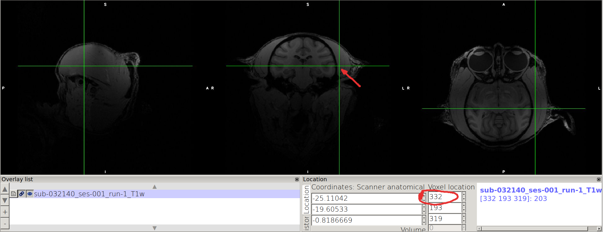
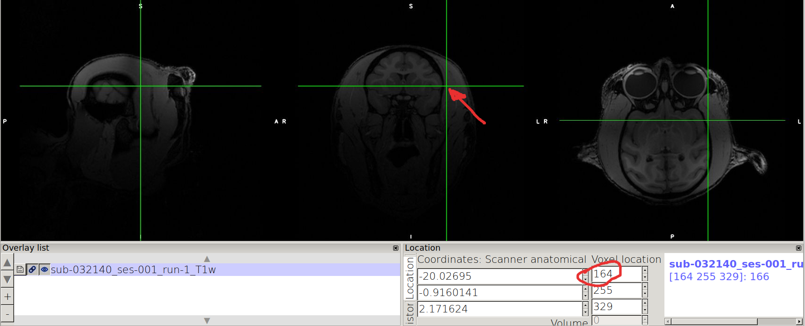
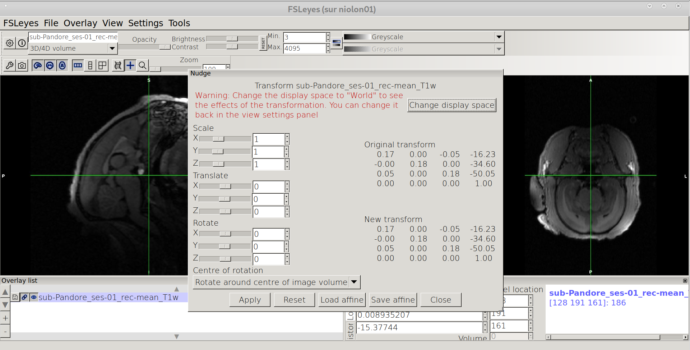
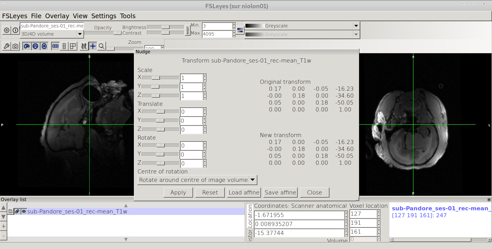
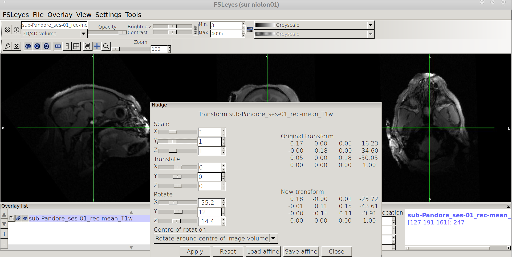
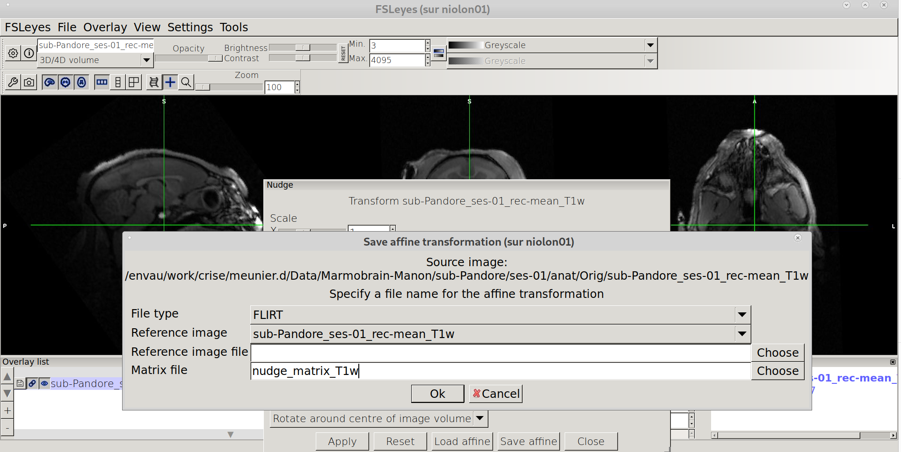

Useful tips (before processing)¶
How to orient the labels your images ?¶
In particular, the image should be in neurological convention, i.e. left label on the right of the image in FSL coronal representation, and x values increasion from left to right.
{kind=link}
If is not the case, use the following procedure to swap the X-axis
cp Orig/sub-Iroquoise_ses-01_T1w.nii.gz .
fslreorient2std sub-Iroquoise_ses-01_T1w.nii.gz sub-Iroquoise_ses-01_T1w_reorient.nii.gz
fslorient -forceneurological sub-Iroquoise_ses-01_T1w_reorient.nii.gz
fslswapdim sub-Iroquoise_ses-01_T1w_reorient.nii.gz -x y z sub-Iroquoise_ses-01_T1w_reorient_swapped.nii.gz
mv sub-Iroquoise_ses-01_T1w_reorient_swapped.nii.gz sub-Iroquoise_ses-01_T1w.nii.gz
After the labels are reoriented:
{kind=link}
How to tilt the orientation of your images ?¶
Nudging the image with FSLEyes¶
In FSLEyes¶
Open T1w image
fsleyes Orig/sub-Pandore_ses-01_rec-mean_T1w.nii.gz
{kind=link}
Open Nudge Menu
In the upper bar menu of FSLEyes, click on “Tools” -> “Nudge”
{kind=link}
Change to World coordinates
Click on “Change display Space”
{kind=link}
Rotate the image
Should be: biggest dimension along the anterior-posterior axis (Y) No Left/right tilt (equilibrated) Facing straight when viewed from from the top
{kind=link}
Saving the affine
Click on “Save affine” in the lower menu of Nudge window, and !!Important!! choose “FLIRT” for file type and save the affine under your favorite name .mat (e.g nudge_T1w.mat)
{kind=link}
Apply the nudge transfo to the Orig image¶
flirt -in sub-Pandore_ses-01_rec-mean_T1w.nii.gz -o sub-Pandore_ses-01_rec-mean_T1w_nudge.nii.gz -ref sub-Pandore_ses-01_rec-mean_T1w.nii.gz -applyxfm -init nudge_T1w.mat
(optionally, fslreorient2std matbe also be applied)
fslreorient2std sub-Pandore_ses-01_rec-mean_T1w_nudge.nii.gz sub-Pandore_ses-01_rec-mean_T1w_nudge_std.nii.gz
Possibly, pre-apply the align T2 -> T1 before the launch of the script (it should be done at the beginning of the script, but better to check if the command is working properly)
flirt -in sub-Pandore_ses-01_T2w.nii.gz -ref sub-Pandore_ses-01_rec-mean_T1w.nii.gz -out sub-Pandore_ses-01_T2w_flirt.nii.gz -dof 6
rename everything back as intended in BIDS¶
mv sub-Pandore_ses-01_rec-mean_T1w_nudge_std.nii.gz sub-Pandore_ses-01_rec-mean_T1w.nii.gz
mv sub-Pandore_ses-01_T2w_flirt.nii.gz sub-Pandore_ses-01_T2w.nii.gz
How to compute cropping parameters ?¶
All the pipeline works with a default tool for automated cropping (bet_crop node) if no indiv_params.json are provided. However, the pipeline will give much better results when cropping values are provided.
Here is the different steps on how to compute crop_T1 args:
Open the original T1 file with FSLeyes
The image should be properly oriented and properly tilted. If not, look at previous sections (label reorient and tilt).
Consider the image in the middle (coronal view), and find the lowest value in x where the brain is contained (should be on the L label side, on the right side of the coronal view) and mark the value you see on the top rectangle of “Voxel location”.
N.B. A margin of 5-10 voxels is a good margin to ensure enclosing.

Point on the other side of the coronal view, and mark the highest value enclosing the brain.

N.B. we advice you to take note as follows: for a given axis, x: xmin xmax xmax-xmin
For example in the case of the example:
x: 149 361 361-149=212
do the same for the y and z axis, and you end up with the following values:
x: 149 361 361-149= 212
y: 88 338 338-88= 250
z: 246 413 413-246= 167
Then you will be able to fill and individual paramater file (for example called indiv_params.json), following the model:
{
"sub-032140":
{
"ses-001":
{
"crop_T1":
{
"args": "149 212 88 250 246 167"
}
}
}
}
N.B. the values to be added in the args line follow exactly the order of the highlighted parameters in the previous text.It also corresponds to the parameters provided for fslroi (see https://fsl.fmrib.ox.ac.uk/fsl/fslwiki/Fslutils for more details)
The indiv_params.json file can be included in the command line with the -indiv option (see Individual Parameters. section and How to run workflows. section on how to run command line)